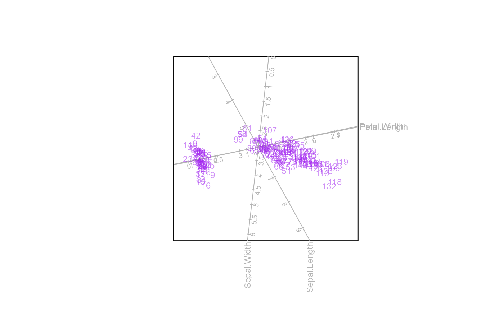
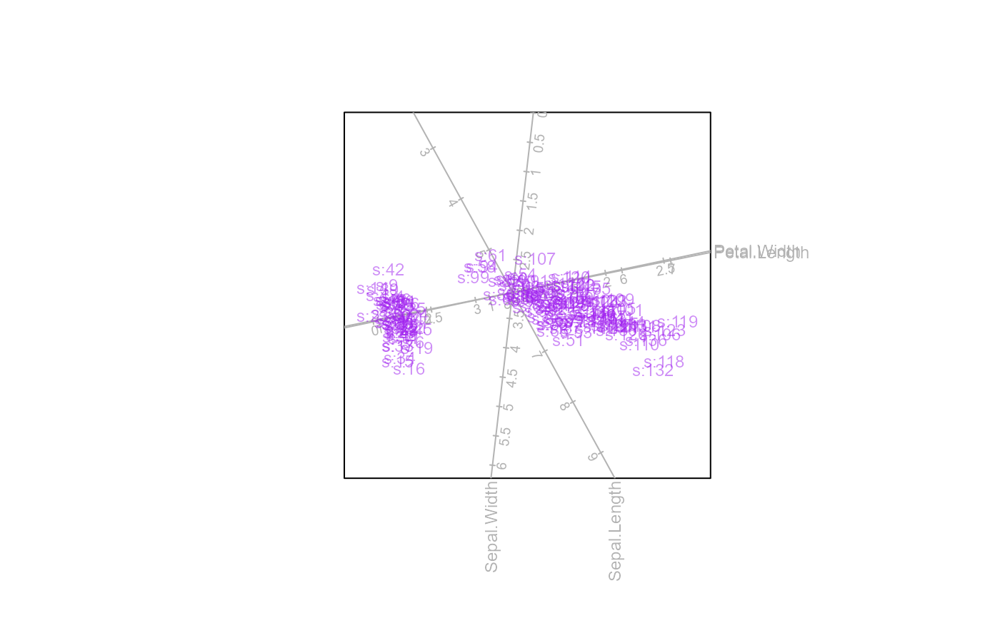
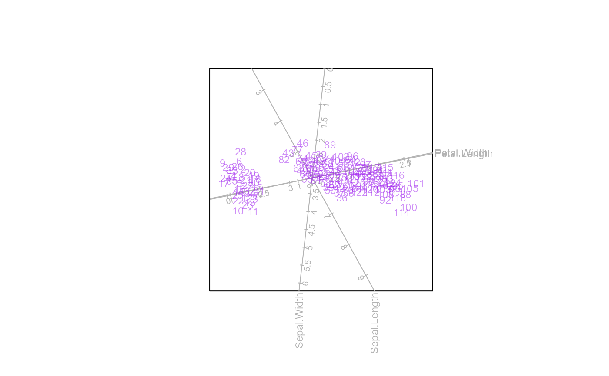

samples.RdThis function allows formatting changes to samples.
samples (bp, which = 1:bp$g, col = ez.col, pch = 16, cex = 1,
label = FALSE, label.name = NULL, label.col=NULL, label.cex = 0.75,
label.side = "bottom", label.offset = 0.5,
connected=FALSE, connect.col = "black", connect.lty = 1,
connect.lwd = 1, opacity = 1)an object of class biplot.
vector of which groups of samples to display, with default bp$g.
sample colour, with default blue.
sample plotting character, with default +.
sample character expansion, with default 1.
logical (TRUE, FALSE), whether samples should be labelled, with default FALSE. Alternatively, specify "ggrepel" for non-overlapping placement of labels.
vector of length number of samples, with default
NULL, rownames(bp) are used.
vector of length number of samples with the colour of the labels, defaulting to the colour of the sample points.
label text expansion, with default 0.75.
side of the plotting character where label appears, with default bottom. Note that unlike
the argument pos in text(), options are "bottom", "left", "top", "right" and not 1, 2, 3, 4.
offset of the label from the data point. See ?text for a detailed explanation of the
argument offset.
logical, whether samples are connected in order of rows of data matrix, with default FALSE.
colour of the connecting line, with default black.
line type of the connecting line, with default 1.
line width of the connecting line, with default 1.
opacity of sample points, with default 1 (opaque).
A list with the following components is available:
which means to display.
colour of the samples.
plotting character of the samples.
expansion of the plotting character of the samples.
TRUE or FALSE, whether samples should be labelled, with default
FALSE.
If NULL, the row names will be used, with default NULL. Alternatively, a vector of length n should be used.
colour of the label.
expansion of the label.
side at which to plot the label of samples.
offset of the label from the data point.
TRUE or FALSE, whether samples should be connected in row order of X.
colour of the connecting line.
line type of the connecting line.
line width of the connecting line.
opacity of sample points, with default 1 (opaque).
The arguments which, col, pch and cex are based on the specification of group.aes or classes. If no groups
are specified, a single colour, plotting character and / or character expansion is expected. If g groups are
specified, vectors of length g is expected, or values are recycled to length g.
The arguments label, label.cex, label.side and label.offset are based on the sample size n. A single value
will be recycled n times or a vector of length n is expected.
biplot(iris[,1:4]) |> PCA() |> samples(col="purple",pch=15, opacity=0.5) |> plot()
biplot(iris[,1:4]) |> PCA() |>
samples(col="purple",pch=NA, opacity=0.5, label = TRUE) |> plot()

biplot(iris[,1:4]) |> PCA() |>
samples(col="purple",pch=NA, opacity=0.5, label = TRUE,
label.name = paste("s:",1:150, sep="")) |>
plot()

biplot(iris[,1:4]) |> PCA() |>
samples(col="purple",pch=NA, opacity=0.5, label = "ggrepel") |> plot()
#> Warning: Use of `df$x` is discouraged.
#> ℹ Use `x` instead.
#> Warning: Use of `df$y` is discouraged.
#> ℹ Use `y` instead.
#> Warning: Use of `df$z` is discouraged.
#> ℹ Use `z` instead.
#> Warning: Use of `df$x` is discouraged.
#> ℹ Use `x` instead.
#> Warning: Use of `df$y` is discouraged.
#> ℹ Use `y` instead.
#> Warning: Use of `df$z` is discouraged.
#> ℹ Use `z` instead.
#> Warning: ggrepel: 22 unlabeled data points (too many overlaps). Consider increasing max.overlaps
#> Warning: Use of `df$x` is discouraged.
#> ℹ Use `x` instead.
#> Warning: Use of `df$y` is discouraged.
#> ℹ Use `y` instead.
#> Warning: Use of `df$z` is discouraged.
#> ℹ Use `z` instead.
#> Warning: Use of `df$x` is discouraged.
#> ℹ Use `x` instead.
#> Warning: Use of `df$y` is discouraged.
#> ℹ Use `y` instead.
#> Warning: Use of `df$z` is discouraged.
#> ℹ Use `z` instead.
#> Warning: Use of `df$x` is discouraged.
#> ℹ Use `x` instead.
#> Warning: Use of `df$y` is discouraged.
#> ℹ Use `y` instead.
#> Warning: Use of `df$z` is discouraged.
#> ℹ Use `z` instead.
#> Warning: Use of `df$x` is discouraged.
#> ℹ Use `x` instead.
#> Warning: Use of `df$y` is discouraged.
#> ℹ Use `y` instead.
#> Warning: Use of `df$z` is discouraged.
#> ℹ Use `z` instead.
#> Warning: ggrepel: 22 unlabeled data points (too many overlaps). Consider increasing max.overlaps
